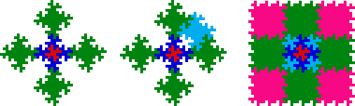

| Select and group these five shapes to make a new shape. |
| If we continue by placing copies above, below, left, and right of the original, we obtain a pattern that does not tile the plane. |
|  |
| The size and position of the gap suggests that we may try a tile consisting of nine copies of the original shape. |
| While this collection will tile the plane, in the limit it no longer has a fractal boundary. |
Return to Method 1.